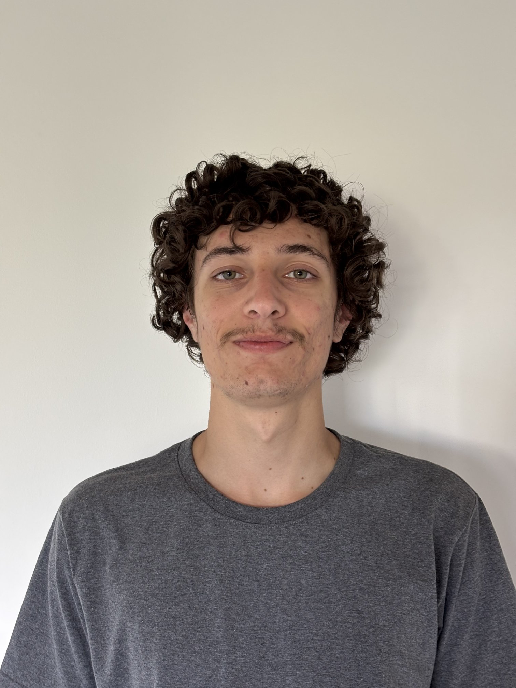

Analista de
Suporte
Olá👋 Bem-vindo ao meu Portfólio! Conheça um pouco mais sobre mim.

Olá👋 Bem-vindo ao meu Portfólio! Conheça um pouco mais sobre mim.
Natural de Caxias do Sul - RS📍trabalho com tecnologia desde meus 18 anos de idade, conhecendo e me aprofundando mais sobre.
Conheça um pouco da minha trajetória.🙋🏼♂️
Em uma nova jornada como Analista de Suporte na Keyworks, realizo o contato diretamente com o cliente, garantindo eficiência e organização dos chamados.
Como Instrutor de Sistemas, tive responsabilidade para treinar novos colabores a utilizarem os sistemas de gestão Windel. Realizei vídeos de simulação, documentações, avaliações, feedbacks e outras atividades relacionadas.
Como Técnico em Suporte, tive responsabilidade de prestar suporte aos clientes sobre os sistemas de gestão Windel, além de estar responsável sobre qualificar pendências de novas funcionalidades, melhorias, correções, entre outros.
Minha primeira experiência profissional foi como Auxiliar Metalúrgico, sendo responsável por reabastecimento de máquinas, limpeza do local, reciclagem de materiais, entre outros.
Minha mais recente experiência acadêmica foi o Curso Técnico realizado na QI Faculdade & Escola Técnica, realizando Informática para Internet e aprendendo mais sobre desenvolvimento e tecnologia. Em breve iniciarei o bacharel em Ciências da Computação na Universidade de Caxias do Sul! 🎓